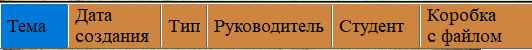
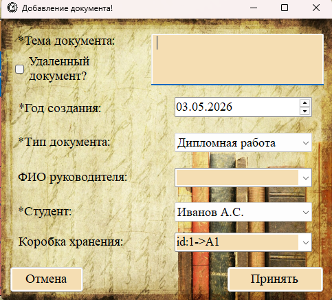
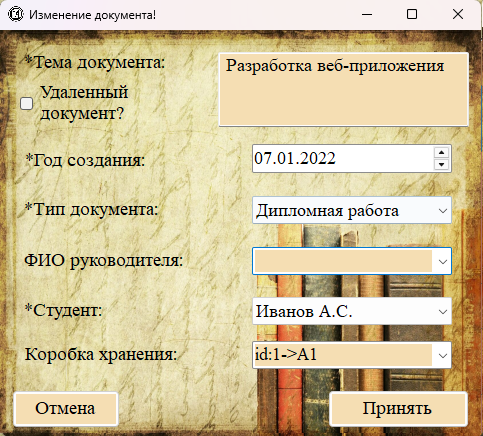

Раздел «Документы работ» (меню «Студенты → Документы работ») содержит все учебные работы студентов: курсовые работы, дипломные работы (ВКР), отчёты по практике. Согласно правилам архивного делопроизводства, эти документы хранятся 5 лет.

Рис. 1. Раздел «Документы работ» с перечнем всех документов
Отображаемые поля (колонки таблицы)

| Название колонки | Описание |
|---|---|
| Тема | Название работы (например: «Анализ финансовой отчётности предприятия»). |
| Дата создания | Год, когда была выполнена работа. |
| Тип | Тип документа (курсовая, дипломная, отчёт по практике). |
| Руководитель | ФИО научного руководителя (необязательное поле). |
| Студент | ФИО студента — автора работы. |
| Коробка с файлом | Место физического хранения документа (стеллаж, полка, коробка). |
Добавление документа

Рис. 2. Форма добавления нового документа
Поля формы добавления документа:
| Поле | Описание |
|---|---|
| Тема документа * | Название работы (многострочное текстовое поле, обязательно для заполнения) |
| Год создания * | Выбор года с помощью календаря (поле со стрелками вверх/вниз) |
| Тип документа * | Выпадающий список, заполняемый из справочника «Типы документов» |
| ФИО руководителя | Текстовое поле или выпадающий список (необязательное поле) |
| Студент * | Выпадающий список со всеми студентами (обязательно для выбора) |
| Коробка хранения | Выпадающий список с коробками (место физического хранения документа) |
| Удаленный документ? | Чекбокс — при установке документ будет сохранён в таблицу удалённых документов |
Редактирование документа

Рис. 3. Форма редактирования документа (заголовок «Изменение документа»)
Для редактирования документа:
1. Выделите строку с нужным документом в таблице.
2. Нажмите кнопку «Редактировать».
3. Внесите изменения в поля формы.
4. Нажмите «Принять» для сохранения.
Особенности редактирования:
— Если при редактировании изменить статус чекбокса «Удаленный документ?», запись будет удалена из текущей таблицы и создана заново в соответствующей (обычные → удалённые или удалённые → обычные).
— При изменении типа документа, студента или коробки обновляются соответствующие связи.
Удаление документа

Рис. 4. Подтверждение удаления документа
Удаление документа возможно как из обычного раздела, так и из раздела «Удалённые документы»:
1. Выделите одну или несколько строк с документами.
2. Нажмите кнопку «Удалить».
3. Подтвердите действие.
Поиск и фильтрация документов
Для раздела «Документы работ» доступны следующие возможности поиска и фильтрации:
— Полнотекстовый поиск через строку поиска (по теме документа, ФИО студента, руководителю).
— Фильтрация по типу документа — например, показать только дипломные работы.
— Фильтрация по студенту — найти все документы конкретного студента.
— Фильтрация по году создания — найти документы за определённый год.
Печать документов

Документы можно включать в навигационный файл для дальнейшего поиска в архиве:
— Выделите документ в таблице и выберите «Печати → Составление файла навигации → Добавить выбранный документ».
— Также можно добавить все документы студента (из раздела «Студенты») или все документы группы.
— Срок хранения документов работ составляет 5 лет. По истечении этого срока рекомендуется перемещать документы в раздел «Удалённые документы» (с помощью чекбокса «Удаленный документ?»).
— В коробках с отчётами по практике и курсовыми работами должны храниться списки студентов группы, работы которых находятся в данной коробке.
— Для дипломных работ в программе можно сформировать отдельную опись (раздел 2.5.2).